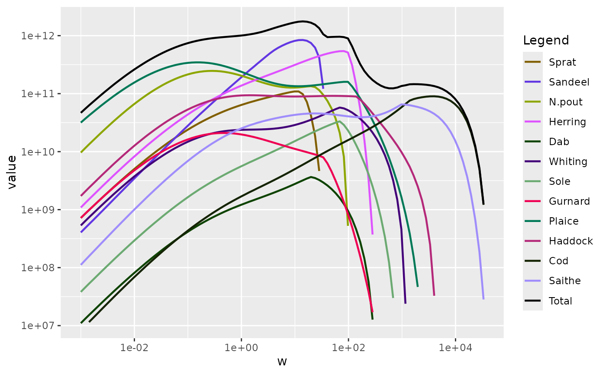

This function plots the biomass flux for each species in the model as a function of body size. To understand the meaning of the biomass flux one should think of the growth of the fish as transporting biomass from the small to the large individuals. The biomass flux is the rate at which biomass is transported through a particular size. So it is given as the product of the growth rate \(g(w)\), the body mass \(w\) and the density of individuals \(N(w)\) of that size, $$J_B(w) = g(w) w N(w).$$
Usage
plotBiomassFlux(params, ylim = c(NA, NA), total = FALSE)Arguments
- params
A MizerParams object
- ylim
A numeric vector of length 2 giving the lower and upper limits for the y-axis. If the lower limit is NA, it is set to 1e-20. If the upper limit is NA, it is set to the maximum value of the biomass flux. Default is c(NA, NA).
- total
A logical indicating whether to add a line for the total biomass flux. Default is FALSE.
Examples
plotBiomassFlux(NS_params, ylim = c(1e7, NA), total = TRUE)
